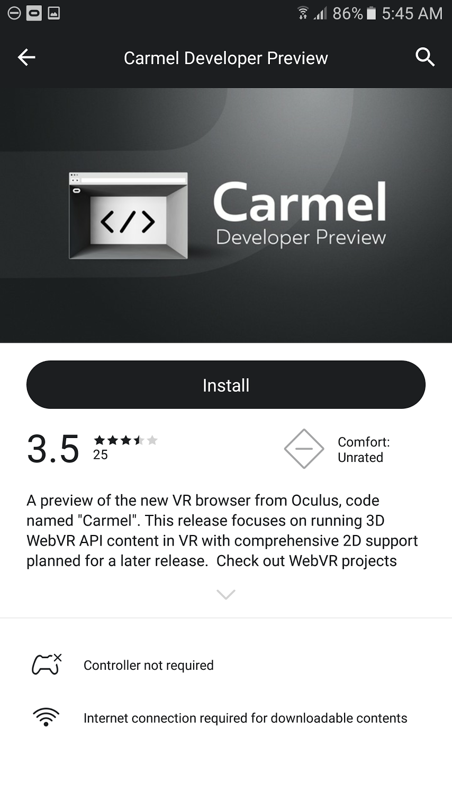

{% import '_helpers.html' as helpers %}
{% include '_head.html' %}
Oculus Carmel • WebVR Rocks
- Search for and install Carmel Developer Preview from Oculus Gear VR store.

- Launch Carmel Developer Preview from your Gear VR library.
- Enjoy! There are several WebVR demo's to try when Carmel is started.
- Download
-
Download
- System requirements
-
Samsung Gear VR
- Version
-
0.2-004014
- File size
-
64.18 MB
- Release notes
-
- A preview of the new VR browser from Oculus, code named "Carmel". This release focuses on running 3D WebVR API content in VR with comprehensive 2D support planned for a later release. Check out WebVR projects from other developers and test your own experiences.
- Carmel browser does not yet have any browser UI. Navigating to a arbitrary URL can be done using the `ovrweb` protocol to do so. For instructions, see Launching Your Content on the Oculus VR Web resource.
{% include '_footer.html' %}